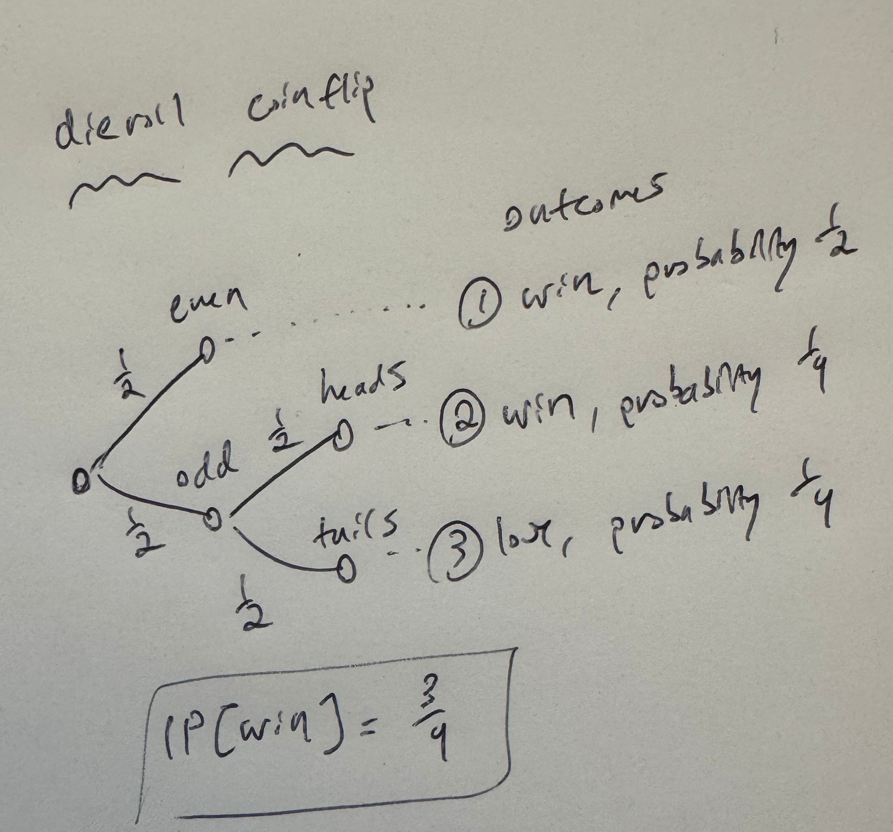

A function \(\mathbb{P}\) from the events of a sample space \(\Omega\) to the real numbers is a probability function if the following axioms hold. Non-negativity: \(\mathbb{P}[A] \ge 0\) for every event \(A \subseteq \Omega\) Additivity: For \(A,B \subseteq \Omega\) with \(A \cap B = \emptyset\), we have \(\mathbb{P}[A \cup B] = \mathbb{P}[A] + \mathbb{P}[B]\) Normalization: \(\mathbb{P}[\Omega] = 1\) | If \(A\) is an event, then \[\mathbb{P}[\overline{A}] = 1 - \mathbb{P}[A]\] | \[\frac{d}{dx}x^4 = 4x^3\] |
If \(A,B\) are events then \[\mathbb{P}[A \smallsetminus B] = \mathbb{P}[A] - \mathbb{P}[A \cap B]\] | Given two events \(A,B\), we have: \[\mathbb{P}[A \cup B] = \mathbb{P}[A] + \mathbb{P}[B] - \mathbb{P}[A \cap B]\] In general, for \(k\) events \(A_1,\dots,A_k\), we can write \[\mathbb{P}[\bigcup_{i=1}^k A_i] = \sum_{S \subseteq [k], S \not=\emptyset} (-1)^{|S|+1} \mathbb{P}[\bigcap_{i \in S} A_i]\] | \[\int_1^2 x^2 = \frac{x^3}{3}\Big|_1^2 = \frac{8}{3}-\frac{1}{3}=\frac{7}{3}\] |
For two events \(A,B\) with \(A \subseteq B\), \[\mathbb{P}[A] \le \mathbb{P}[B]\] | Given a set \(\Omega\), a collection of sets \(A_1,\dots,A_k\) is a partition of \(\Omega\) if \(A_i \cap A_j = \emptyset\) for each \(i, j \in [k], i \not= j\) (i.e. they are pairwise disjoint) and \(\bigcup_{i=1}^k A_i = \Omega\). |
Permutation and Combination
If the order does matter, then we use \(n\) pick \(k\), which is equal to \(\frac{n!}{(n-k)!}\) since there are \(n\) choices for the first element, \(n-1\) choices for the second element, and so on. |
Sample space and event
An event is a subset of the sample space. For example, the event that you roll an even number in the above experiment is {2,4,6}. If we describe an event in words, then it is always assumed that the event is maximal and includes all outcomes that meet our description. For example, the event that we roll an even number is not {2,4} in the above experiment, because we did not include the outcome 6. |
The Monty Hall problem
You get to pick a door. Then, of the two doors you haven't picked, a random one is opened that does not have a car behind it. You are now invited to switch to the other unopened door. The question is: should you switch? And the answer is yes: if you stay, you get the car with probability 1/3, which was just your initial probability of getting the choice right. If you switch, you get the car with probability 2/3. This is because you win so long as your initial choice was wrong, with happens with probability 2/3. |  |
For any two events \(A,B\): \[\mathbb{P}[A \cup B] \le \mathbb{P}[A] + \mathbb{P}[B]\]In general, for any events \(A_1,A_2,\dots,A_n\), the union bound is \[\mathbb{P}[\bigcup_{i=1}^n A_i] \le \sum_{i=1}^n \mathbb{P}[A_i]\] |